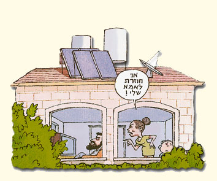

גישור בענייני משפחה
לגישור המשפחתי מאפיינים ויתרונות ייחודיים
- בחינת החלופות: הגישור המשפחתי מספק לבני הזוג הזדמנות טובה לבחון קודם כל האם נכון להם להיפרד או להישאר ביחד.
- הליך ענייני וממצה: לזוגות המחליטים להישאר יחד מאפשר הגישור במהלך קצר יחסית, בשונה מטיפול, שהינו ברוב המקרים ארוך ומעמיק, להגיע להסכמות שונות שיקלו על החיים יחד.
- גיבוש סדרי עדיפויות: לזוגות המחליטים להיפרד, הגישור מספק הזדמנות טובה לבחון את הדברים החשובים להם באמת, ולהגיע להסכמה על הסוגיות השונות.
- פתרון בדרכי שלום: גישור משפחתי מאפשר לזוגות להיפרד בכבוד ובדרך של הבנה והמשך שיתוף פעולה.
- התאמה אישית: הפתרונות האפשריים בגישור מותאמים אישית לכל זוג ולכל משפחה.
- טובת הילדים: במהלך הגישור מבררים בני הזוג בעזרת המגשר מה רצוי לילדיהם, ומגיעים לפתרונות המבטיחים את טובת הילדים.
- הגישור המשפחתי נעשה על ידי מגשר בעל ניסיון רב בתחום.
- הרגישות המיוחדת המחויבת בהתייחסות למצבים אלה, הביאה לכך שהגישור המשפחתי היה בין התחומים הראשונים שהתפתחו בגישור ישראל.
- לגישור ישראל ניסיון עשיר והתמחות בגישורים משפחתיים ומסייע לאורך השנים לבני זוג להגיע להסכמים המסיימים את המחלוקות ומאפשרים לכל בני המשפחה להמשיך בחיים תוך הבנה וצמיחה.